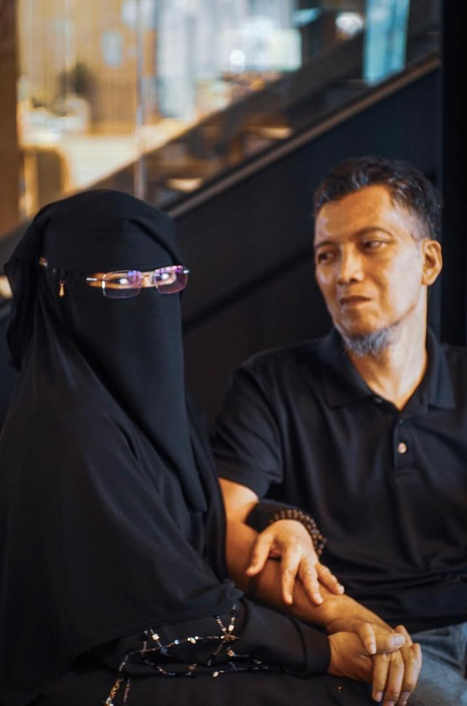
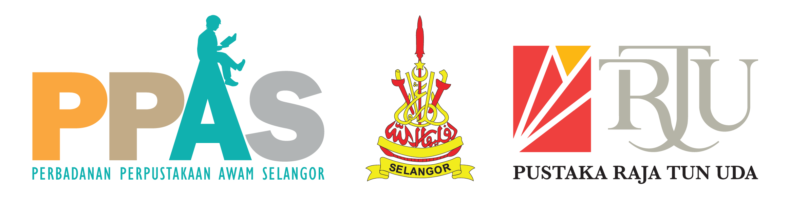
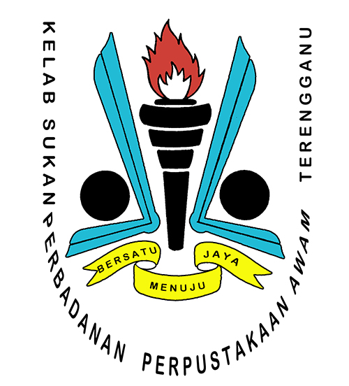
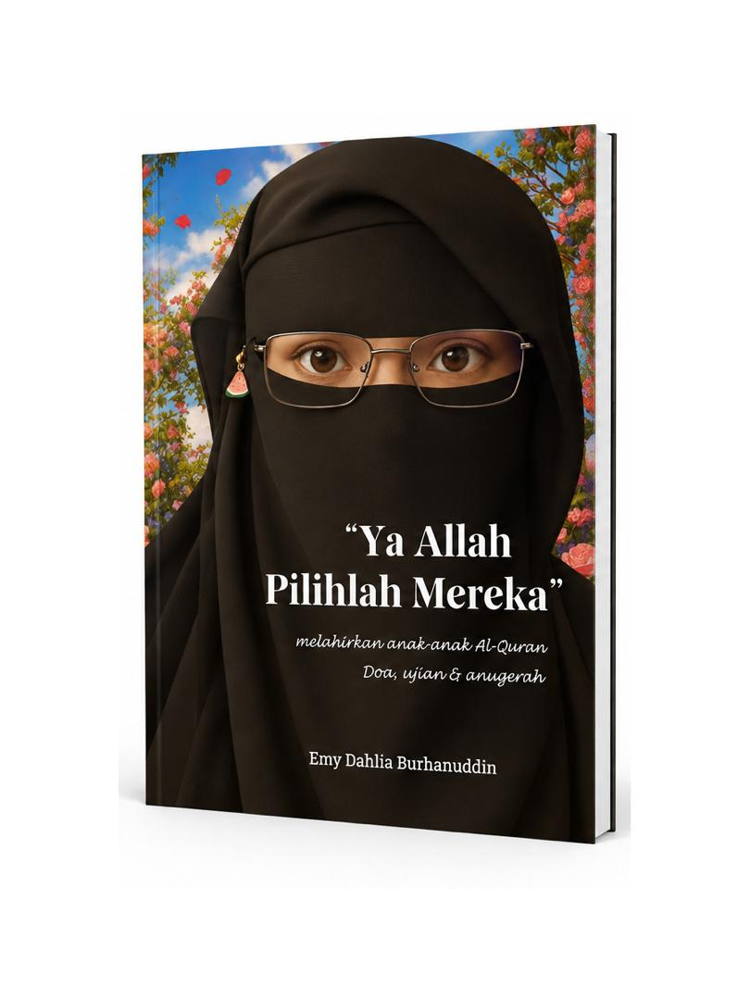
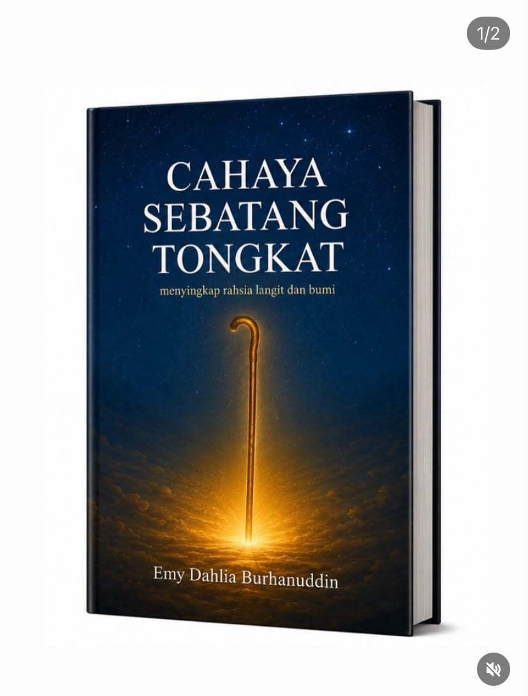
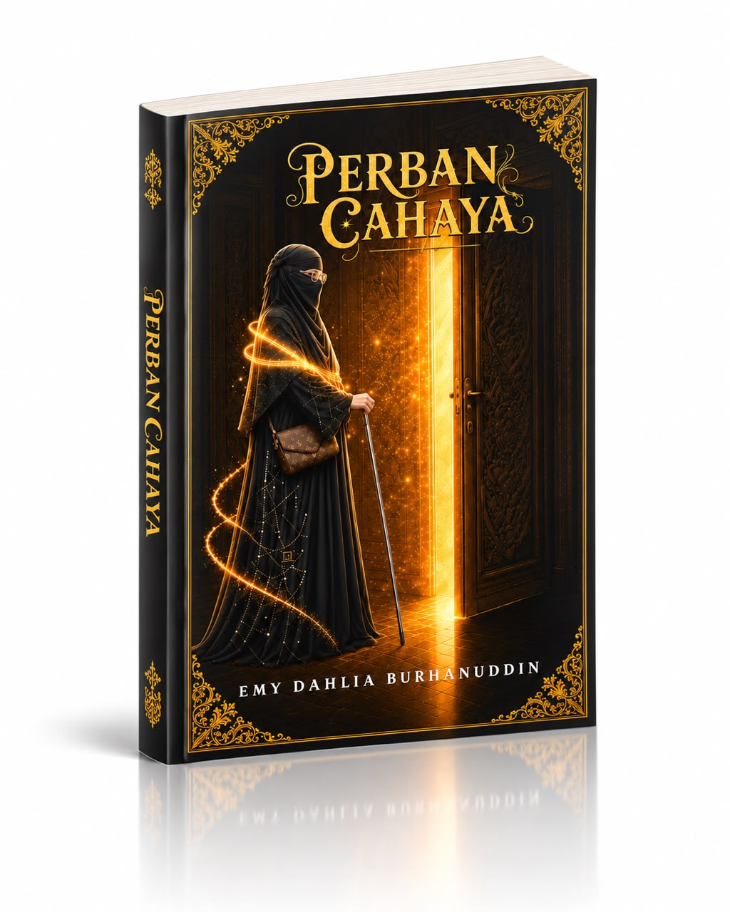
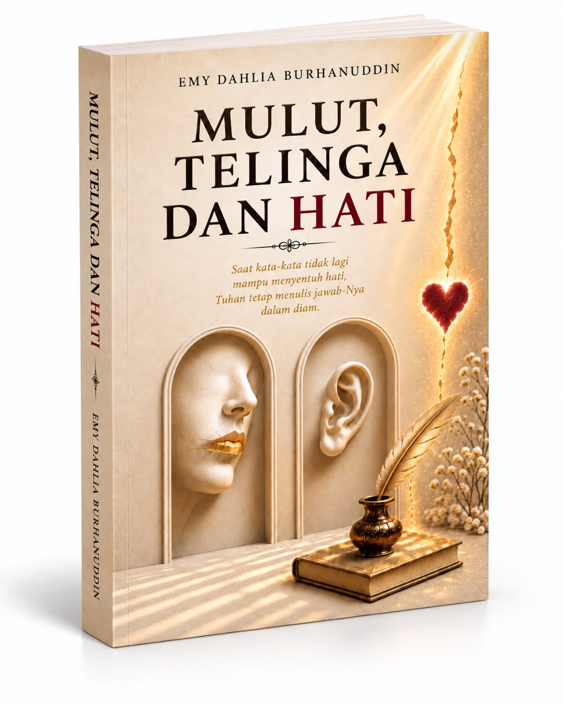

Faith
Rooted in faith
that never fades.
A journey of faith, hope & reflection
This is not just a story.
From trials came strength.
From tears came light.
From faith came perseverance.
And from His mercy, Siri Cahaya was born.
✧ A story of becoming, believing and beginning again.
Rooted in faith
that never fades.
Sharing hope
through every story.
Encouraging reflection
for a better tomorrow.
For anyone seeking light
in their journey.
“Light does not come from us. It comes from Allah.
Choose His Light.”
02 — Tentang: Kisah Saya
Saya menulis bukan sekadar untuk menceritakan kehidupan sendiri, tetapi untuk mencari makna di sebalik setiap perjalanan yang Allah izinkan berlaku.
Ada pengalaman yang kelihatan biasa ketika dilalui, namun setelah direnungi kembali, ia membuka lapisan makna yang tidak pernah saya sedari sebelumnya.
Daripada doa, ujian keluarga, pertemuan, kehilangan, pencarian dan kesyukuran, lahirlah Siri Cahaya. Sebuah perjalanan yang bermula sebagai kisah peribadi, tetapi akhirnya saya sedari bahawa rasa yang dilalui mungkin turut menjadi sebahagian daripada kisah orang lain.
Kerana setiap takdir mempunyai ceritanya, dan setiap cerita mempunyai ruang untuk kita mengambil ibrah.
Empat naskhah, empat perjalanan, satu amanah.

Dari pengalaman lahirlah tulisanEmpat naskhah, empat suara
Review terpilih daripada pembaca Siri Cahaya.
Ya Allah, Pilihlah Mereka
“Menangis baca YAPM. Sungguh akak rasa iri sebab Amy ada anak-anak huffaz. Akak doakan cucu akak nanti ada yang menjadi huffaz.”Dr Vidyamala binti MohamadStrategist FITRAH & Transformasi Diri | Trainer Bertauliah HRD Corp | Penceramah Bebas
Cahaya Sebatang Tongkat
“Saya mengulang baca Cahaya Sebatang Tongkat dengan sedikit kekuatan baharu. Saya menyelaminya hingga ke dasar makna. Ya Allah... hebatnya insan terpilih itu. Semoga yang terbaik sahaja daripada Allah SWT untuknya.”Cikgu Rahmin MahasanKetua Penolong Pengarah Kanan SPP | Jabatan Pendidikan Negeri Pahang
Perban Cahaya
“Tanpa kita sedar, Allah membimbing kita supaya berada di jalan yang betul. Allah beri apa yang kita perlu, bukan apa yang kita mahu. Dan sebenarnya Along sedang berusaha untuk menjadi hamba yang lebih baik. Tulisan Memy sebenarnya banyak menyedarkan Along. Insya-Allah, slowly but surely.”RuyanaPenolong Pengarah, Unit Sekolah Jenis Khas | Sektor Pengurusan Sekolah | Jabatan Pendidikan Negeri Pahang
Mulut, Telinga dan Hati
“Emi tahu tak, bila Ksuzi baca tulisan Emi, ia terasa sangat dekat dengan kehidupan orang yang pernah melaluinya. Ksuzi pernah rasa kehilangan anak. Apa yang kita lalui sebenarnya memang perlu kita lalui.”Suziharjuta ShaariBerlatarbelakangkan Komunikasi Massa, pernah dalam dunia media dan kewartawanan bersama RTM dan Berita Harian sebelum beralih ke perniagaan, pemasaran dan jualan serta membangunkan Puteri Salon.
Jejak Siri Cahaya
Karya-karya Siri Cahaya kini telah berada di rak dan tersedia untuk pembaca di tiga perpustakaan ini.


The journey
Not every chapter is easy to write. Some are written through patience, some through tears, and some through the courage to begin again. Yet every step can bring us closer to the One who knows the whole story.
The bookshelf
Words and reflections for the chapters that shape us.

Siri Cahaya
Sebuah renungan tentang doa, usaha dan keberanian mempercayai aturan Allah.
Lihat butiran buku →
Siri Cahaya
Sebuah mimpi tentang tongkat bercahaya, 99 hari kemudian sebuah pertemuan, dan rangkaian peristiwa selama tiga tahun tiga bulan.
Lihat butiran buku →
Siri Cahaya
Menelusuri luka, taharah jiwa, penerimaan dan kesedaran bahawa manusia tidak pernah benar-benar berjalan sendirian.
Lihat butiran buku →
Reflections
Membaca semula peristiwa kehidupan dan menyedari bahawa tidak semua makna perlu ditemukan pada hari sesuatu itu berlaku.
Lihat butiran buku →A gift that keeps giving
Wakaf Cahaya is an invitation to share beneficial reading and meaningful reminders with others. A book can travel further than we imagine, reaching a heart at just the right moment.
Ask about Wakaf Cahaya →Rekod sehingga 25 Ogos 2026.
Tropicana Aman · Putrajaya · Bandar Enstek · Bukit Rimau 24 Jam · Denai Puchong 24 Jam · Damansara Damai 24 Jam · Sri Gombak · Seksyen 13 Shah Alam 24 Jam
Ruang berkarya
Setiap cerita bermula dengan satu idea. Pilih sokongan yang sesuai untuk membawa idea anda menjadi naskhah.
Bimbingan Penulis
Sesi bimbingan untuk menyusun idea, membina struktur, menguatkan watak dan menjadikan proses menulis lebih jelas serta terarah.
Ghost Writer
Perkhidmatan penulisan dari idea awal hingga manuskrip lengkap, dengan pendekatan yang menjaga suara, visi dan kerahsiaan anda.
A new chapter begins here
For book enquiries, collaboration, media and Wakaf Cahaya, send us a message. We would love to hear from you.